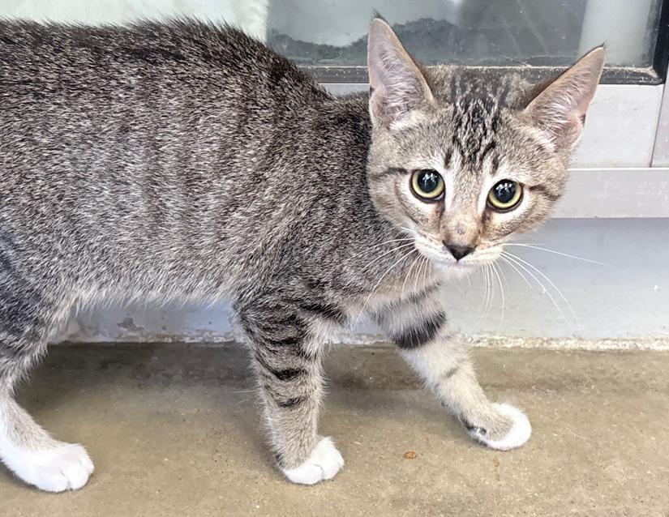
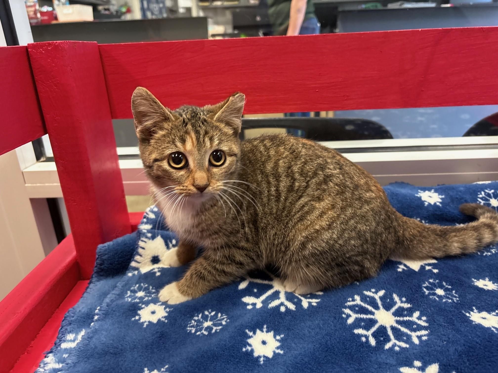
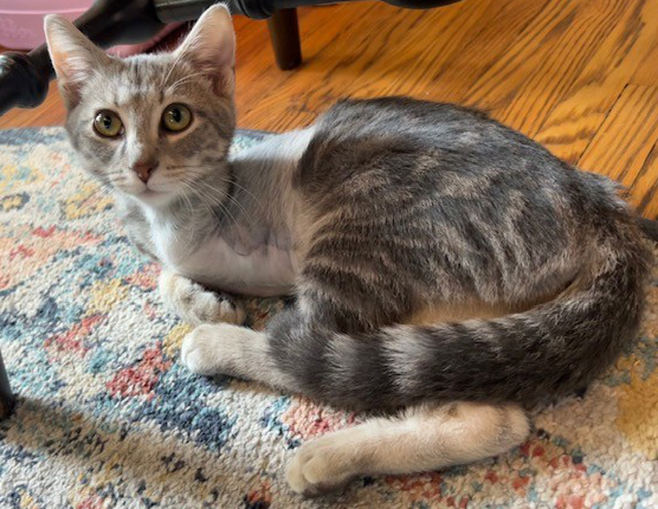
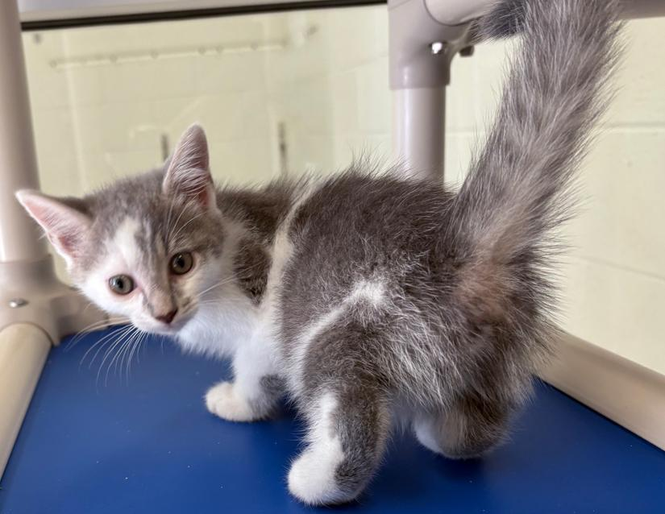

ASIP is a gene that is responsible for making a cat tabby or not tabby. There is more than one gene that goes into the tabbiness of a cat. We’ll get to that later…
“Agouti”, caused by ASIP, in mammals refers to a coloration/pattern of a mammal, characterized by hairs on the animal that alternates between black and (usually)yellow. This gives the animal a brown-ish colored fur. Rabbits you can find in your backyard are a great example of this.
Cool fact: Most wild cats have stripes and spots because of this gene! This includes tigers, leopards, bobcats and many more!
For cats, this is a bit different. Their agouti genes, if present, only creates the BACKGROUND of a tabby cat, making it look like they are striped.
All cats have a built-in blueprint of what their stripes are supposed to look like, whether they have the gene to express those stripes or not. This can lead to some kittens having faint tabby marks, as their pigmentation hasn’t fully developed yet and their tabby marks “bleed out”, even if they don’t have the tabby gene.
Furthermore, there are different types of tabbies.
Mackerel tabbies are your typical tiger stripe tabbies.
(click on the images of cats to go to their adoption page!)


Classic tabbies are rarer, with swirls and blotches and thicker stripes.
This is Pogo, a previously adopted blue classic tabby!
Ticked tabbies are even rarer, especially in the US. They seem to be more common in East Asian street cats and oriental breeds.
Without the agouti gene, cats will be solidly colored, like black or gray, with or without white.
Examples:


Here's a quick diagram courtesy of messybeast, the ultimate cat genetics bible!

Reference picture courtesy of messybeast.com
Images of animals courtesy of Columbus Animal Care Servies